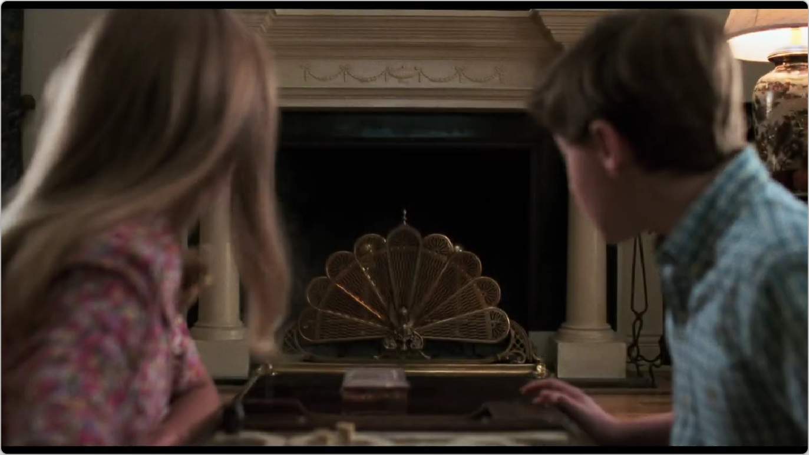
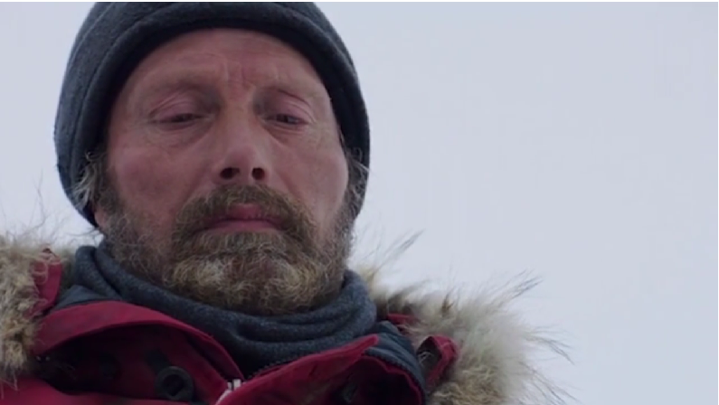

Abstract
Illustrating a multi-sentence story with visual content is a significant challenge in
multimedia research. While previous works have focused on sequential story-to-visual
representations at the image level or depicting a single sentence with a video clip,
creating coherent videos for a long multi-sentence story remains an under-explored area.
In this paper, we propose the task of Video-based Story Illustration that focuses on the
goal of visually illustrating a story with retrieved video clips. To support this task,
we first create a large-scale dataset of coherent video stories, consisting of 85K narrative
stories with 60 pairs of consistent clips and texts. We then propose the Story Context-Enhanced
Model, which leverages local and global contextual information within the story, inspired by
sequence modeling in language understanding. Through comprehensive quantitative experiments,
we demonstrate the effectiveness of our baseline model. Qualitative results and detailed user
studies reveal that our method can produce coherent video sequences from stories. The dataset
and code will be made publicly available upon acceptance.
CVSV dataset

Coherent Video Story Visualization (CVSV) dataset is a large-scale multi-sentence dataset
created to enable the research in the Video-based Story Illustration.
CVSV dataset contains 85K story-video pairs. Each story-video pair consists of 60 pairs
of consistent sentences and coherent clips, where sentences are from narrative stories
instead of independent descriptions. We choose movie recap videos as our data source to
build a dataset of high-quality videos and stories because of their inherent storytelling
and global visual coherence. To the best of our knowledge, CVSV is the largest video dataset
with long story content.
Data Preview

